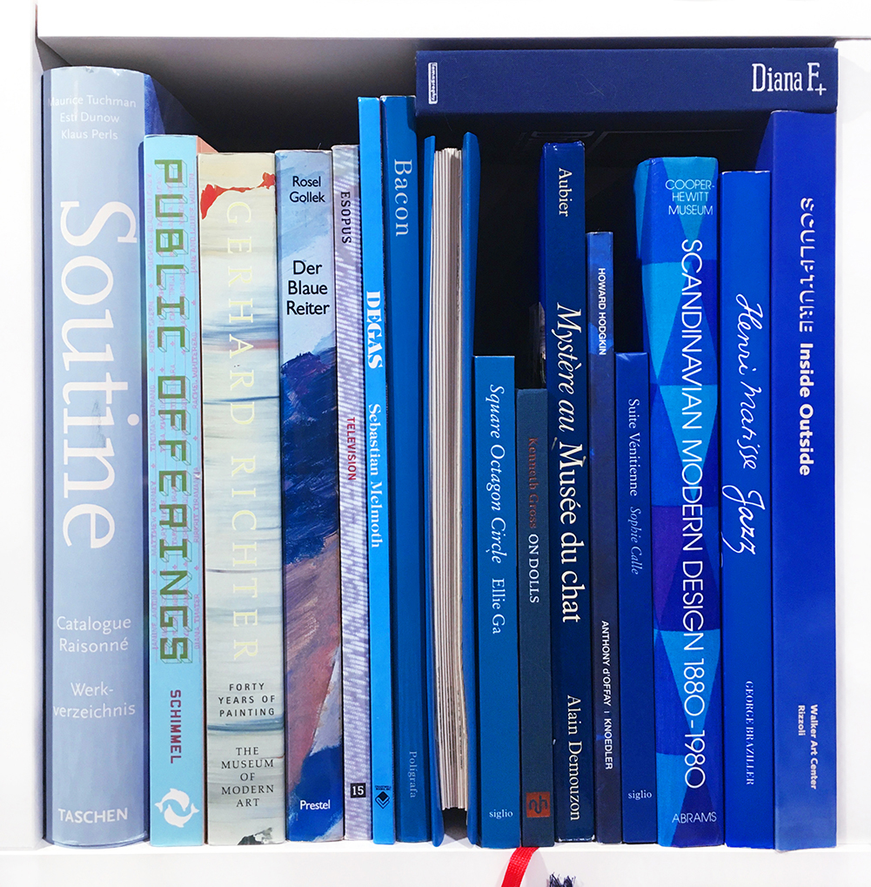

- CATALOGUE RAISONNÉ: WERKVERZEICHNIS
Chaim Soutine, Maurice Tuchman
Taschen, 2001
- PUBLIC OFFERINGS
Paul Schimmel, Yilmaz Dziewior
Thames + Hudson, New York, 2001
- GERHARD RICHTER: FORTY YEARS OF PAINTING
Robert Storr, Gerhard Richter
The Museum of Modern Art, New York, 2002
- DER BLAUE REITER IM LENBACHHAUS MÜNCHEN
Helmut Friedel, Annegret Hoberg
Prestel, 2000
- ESOPUS 15: TELEVISION
Tod Lippy
Esopus Foudnation Ltd., 2010
- DEGAS
Sebastian Melmoth
Brompton Books Corp., 1993
- BACON
Francis Bacon
Ediciones Poligrafa, 2002
- LEONARDO DA VINCI: ANATOMICAL DRAWINGS
FROM THE ROYAL LIBRARY WINDSOR CASTLE
The Metropolitan Museum of Art, New York, 1983
- ELLIE GA: SQUARE OCTAGON CIRCLE
Ellie Ga
Siglio Press, 2018
- ON DOLLS
Kenneth Gross
New York Review of Books, 2018
- MYSTÉRE AU MUSÉE DU CHAT
Demouzon
Aubier, 1984
- HOWARD HODGKIN
Robert Violette, Gordon House
Howard Hodgkin and Anthony Peattie, 1993
- SOPHIE CALLE: SUITE VÉNITIENNE
Sophie Calle
Siglio, 2015
- SCANDINAVIAN MODERN DESIGN, 1880-1980
David Revere McFadden, Cooper-Hewitt Museum
Abrams, New York, 1982
- JAZZ
Henri Matisse
Estate of Henri Matisse, 1985
- SCULPTURE INSIDE OUTSIDE
Douglas Dreishpoon, Walker Art Center
Rizzoli, 1988
- DIANA F+ CAMERA DESIGN AND CONCEPT
Lomographic Society International, 2007
